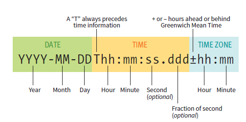

HTML stands for Hypertext Markup Language. In essence, it is used for "marking up" the information on your webpages:
organizing them into clear sections and categories through the use of tags; identifiers enclosed between < and >. This allows the computer
to "understand" the information on the webpage better for assistive technologies like screen readers. The tags also allow us to directly manipulate
specific parts of our web pages with CSS or JS to our liking.
At its absolute basic form, an HTML document will consist of the following tags:
The first line looks like a tag but is not a tag at all. It's just a description that tells the computer what the document contains.
The <html> tag is like the bun of a burger. Everything in the web page must be contained within the <html> </html> tags.
The <head> tag are the condiments of the burger. As shown in the above example, the title of the page is defined here (it's what the browser will use when naming the tab of your webpage). Other things like style changes and metadata are also found within these tags.
The <body> tag is the patty. All of your content, the stuff that the users will see, goes within the <body> tag.
The term element is used to refer to a set of opening and closing tags and their content (if any). All elements are grouped up into two main categories: block elements and inline elements. Block elements take up space on the webpage, with each block element covering a certain area or block. Inline elements are elements which further markup the content within block elements, like quotations or italics. Inline elements don't take up space on their own. Thus, block elements can have nested inline elements but not the other way around.
Now that we've got the basics down, lets take a look at the rest of the tags which we'll use to mark up our content.
Block elements
Paragraphs
<p>...</p>
Block element Content between tags is used to form paragraphs. Each paragraph element always display on new lines. Cannot contain (nest) other block elements
Headings
<h1>...</h1>
Block element Content between tags is used to form headings. By default, all headings are in bold, with H1 being the largest and most significant all the way to H6 which is the smallest.
Lists
<ul>
<li>...</li>
</ul>
Block element Creates an unordered list. Each list item must be encapsulated by an <li> tag. By default, each list item is marked by a bulletpoint.
<ol>
<li>...</li>
</ol>
Block element Creates an ordered list. Each list item must be encapsulated by an <li> tag. Items in ordered lists are marked numerically, starting with 1.
<dl>
<dt>...</dt>
<dd>...</dd>
</dl>
Block element Creates a description list - a list of terms and definitions. Each term must be enclosed by <dt> tags and each definition must be enclosed by <dd> tags.
Quotations
<blockquote>...<blockquote>
Block element Used to distinguish long quoations or testimonials from the rest of the text. By default, content here is placed on a new line and indented.
<q>...</q>
Inline element Used for short, single line quotations. By default, quotation marks are automatically added to the content by the browser. Firefox uses curly quotes, while Chrome uses straight quotes.
Preformatted Text
<pre>..</pre>
Block element Used to display any whitespace exactly as it is typed between the tags. Good for displaying code (ex. see HTML skeleton) or for other situations where placement of words is important.
Figures
<figure>..</figure>
Block element Used to label content as supporting information, like tables, images, videos, etc.
<figcaption>..</figcaption>
Block element Normally used above or below a figure element to describe the figure.
Main Content
<main>..<main>
Block element Used to help the browser identify the main content of the page; helpful for screen readers and other assistive technolgies.Each page can only have onemain tag and it can't be nested in article, aside, header,footer, or nav elements.
Headers
<header>..</header>
Block element Different from text headers! This is used to label content that is found at the top of a page or section of a page like navigation, site title, logos, or introductions.
Footers
<footer>..</footer>
Block element Used to label content normally found at the bottom like dates, authors, and copyright. If it is placed in the body then it is considered to apply to the entire document. If it is placed within section, article, nav, or aside, then it is considered to be part of those sections.
Sections
<section>...</section>
Block element Used to divide long pages into logical and browser identifiable sections. For example, a page about pets could have a section for cats and a section for dogs
Articles
<article>...</article>
Block elemtn Articles are specialized sections containing content that can be considered standalone / can be used outside the scope of its surrounding material.
Aside
<aside>...</aside>
Block element Used to identify content that is related to but not critical to the surrounding information. It could contain a list of links for more information, quotes, background information, etc. There is no default rendering of this element so you'll need to use style sheets to adjust its appearance.
Navigation
<nav>...<nav>
Block element Used to identify navigation / links on the page for the web browser. Should only be used for the primary navigation around a site
Addresses
<address>...<address>
Block element Used to identify addresses for the web browser, usually found at the botttom of the page.
Inline Elements
Emphasized text
<em>...</em>
Used to add emphasis to a part of a sentence. Browsers render this as italicized text but it also has the secondary effect of generating a different tone of voice in screen readers to make the emphasis clear to listeners. If you just want the words italicized for stylistic purposes, it is better to use the <i>...<i> tags or style sheets.
Important text
<strong>...</strong>
Used to identify words or phrases that are important or serious in nature. Browsers render this in bold text and screen readers may change their tone of voice. It you just want the words bolded for stylisitc purposes, it is better to use the <b>...<b> tags or style sheets.
Abbreviations
<abbr title="...">...</abbr>
Used to markup acronyms and abbreviations for search engines and screen readers. The title attribute provides the long version of the abbreviation for further markup.
Citations
<cite>...</cite>
Used to identify references to other material like books or articles. The browser renders this content in italics.
Defining terms
<dfn>...</dfn>
Used to identify the first instances of new terms. Browser doesn't have any special renders for them so be sure to do so in CSS.
Code
<code>...</code>
Used to identify code snippets or references. This content is rendered in monospace font. Combine this with pre to show the code structure
Subscript
<sub>...</sub>
Causes the content text to turn into subscript form.
Superscript
<sup>...</sup>
Causes the content text to turn into superscript form.
Highlight text
<mark>...</mark>
Used to highlight parts of the text. This is not rendered in the browser so use style sheets to create visible highlights.
Time
<time datetime="...">...</time>
Used to identify parts of the text that refer to time, which can used by search engines or other applications. The datetime attribute is used to convert the time in the content to a machine-readable format. The figure below shows the structure on how to convert times so that they can be understood by the browser.

Machine-readable information
<data value="...">...</data>
Used to provide translations of the content into machine readable form for search engines or other applications. For example, "12" for "twelve" or an ISBN number for a book.
Word breaks
<wbr>
This tag is used to tell the browser where to split a word in the event that there isn't enough room. Simply insert this tag at the spots in the word where you'd like a break to be in the even that a break is needed. Can help to keep words from being split in awkward places (ex. in the middle of a syllable).
Generic markup elements
<div>...</div>
A generic block element that can be used to markup areas of the page that don't really go under other categories or just to add more markup more things on the page so that they can be targetted with CSS or JS.
<span>...</span>
Just like a div but for inline elements.
Global Attributes
There are many global attributes which can be applied to every tag. Here are 4 of the most important ones.
Unique identifier
id="..."
Assigns an id to the element. No two elements can have the same ID. Good for applying style rules or scripts to a single specific area on the webpage.
Classification
class="..."
Assigns a class to the element. There can be more than one element with the same class. Good for applying the same style rules or scripts to multiple different tags or a specific subgroup of elements with the same tag
Language
lang="..."
Used to identify the language used in the tag for the browser.
Roles
role="..."
Used to identify the function or purpose of the element. Examples: toolbar, alert, button, navigation, info, etc.
Character Escapes
In HTML there are certain characters that have special meaning like < and >, which are understood by the browser to form tags. Thus in order to include these (and other special characters) in our content, we need special shortcuts
Character
Shortcut
<
<
>
>
"
"
'
'
&
&
Some characters are even invisible but have important uses. For example, the non-breaking space is used in place of a normal space and prevents breaks happening between the two words is placed at.
We add images using the above inline element. The src attribute tells the browser where to find the image (its URL or file location). The alt attribute gives the browser some alternate text to display if the picture doesn't load for some reason. As for the image file itself, PNG, JPEG, or GIF files work fine right away. Other file types like TIFF and BMP need to be converted to a web format. SVG images are a whole other beast that can be added inline using the imgtags above or by writing out all the vector points and putting them between <svg></svg> tags. The first option is simple but doesn't let you do anything to the SVG with JS. The second option does but all the vector points can add bloat to your code and the image isn't cached so it needs to be redrawn every time.
Responsive images
There are a couple of ways to make images resize appropriately depending on the screensize of the device the webpage is being viewcd on. The first is using the img element with a couple of new attributes: srcset and sizes.
The sizes attribute tells the browser what size the image should be, depending on the viewport. The media condition, which in this case is viewport width, is enclosed in circle brackets. This is followed by the percentage of the viewport width the image width should take up if that condition is met. In the example above, the first rule states that if the max-width of the viewport is 480 pixels, then the image width should match the viewport width (100%). Multiple rules are separated by commas and their combined effect is like an if-else statement. Back to the example, we can take the entire sizes conditions as having the following effect: If the viewport width is <=480px, then then image width will be 100% of the viewport width. Else if the viewport width is larger than 480px but smaller than 960px, the image should be 70% of the viewport width. Finally in cases where viewport width is more than 960 px, then the image should just be exactly 240px. The srcset attribute provides the set of images, each at different sizes. It is up to the browser however to make the final choice of which size image to pick. However, since we've told it what to expect the image size to be with the sizes attribute, it will be able to select the most appropriate image from the srcset to download.
The second way to implement responsive images is through the picture tag, as shown below.
There are no attributes for the picture element. As for content, it takes a bunch of alternate sources and the conditions where they should be used. So instead of letting the browser pick what it thinks is the best image size, we're telling it which one to pick. The final element in the list of sources must be an img element because that is how the image will be placed onto the page. The img content will be used if none of the source media conditions hold. Use this method for placing a better image for each viewport size as opposed to simply resizing the same image.
You can test the resizing capabilities with the following pages: Normal imgResponsive imgResponsive Picture
Adding links
To create hyperlinks, we use the anchor element or <a> as shown below:
<a href="..." target="...">...</a>
The href attribute holds where we want to link to. If it were another external site we'd just put the URL of that site as the value of href.
<a href="https://www.google.ca">This is a link to Google</a>
The content between the <a></a> tags will be whatever we want the hyperlink to be: text, even images.
Hyperlinks can also be used to link to specific points on the same page. To do so, give an ID to the element on the page you want to jump to. Then in the anchor element refer to it in the href section using #ID.
<a href="#header">Click here to get to the header</a>
If you want to link to a specific place on a different page, add the #ID after the URL or filepath.
<a href="differentpage.html#footer">Link to footer on different page</a>
The target attribute can be used open the link in a new tab/window. By default, the target is none meaning the link opens up in the same window (replacing the previous page). To open a page in a new window, set the target value to "_blank".
<a href="ttps://www.google.ca" target="_blank">This will open up a new window</a>
You can set the link as email links which can execute some sort of email client once the link is pressed, with a preaddressed email message ready to go. It depends if the client's browser is enabled to do so however. To do so, set the value of hrefto "mailto:emailaddress. It's important to note that putting your email address out like this makes it suceptible to spam bots. In most cases, its better to use some sort of contact form.
<a href="mailto:me@mydomain.com">This will open an email client</a>
For smartphone users, you can even put links to telephone numbers. Depending on the phones OS, clicking these links can open the the phone app, add the number to contacts, or even automatically dial the number. To use a telephone anchor, set the href value to "tel:countrycode-areacode-number".
<a href="tel:+1-999-111-222">This is a phone number</a>
Creating Tables
A basic table in HTML is a combination of three elements: the table element, the table row or tr element and the table data or td element.
The table element is the box which houses all the other elements. How the table will look will depend on the order in which these elements are entered as the content fo the table element. In HTML, table's are built row by row, starting with the first row. To create a row, we use the <tr> tags. We then put the data one by one into these rows, each with their own <td> tag. Or we could create table headers with the <th>...</th> tags. Each element we put as the content of the tr element will result in the formation of a column in the table.
Column spanning
<th colspan="3">My Table</th>
By default, each element in a table row gets one column. If you want certain elements in your table rows to span multiple columns, just use the colspan attribute and write how many columns you'd like it to span. Be careful of the cell shifting that this creates!
Row spanning
<th rowspan="3">My Table</th>
Similar to column span but for rows. by default, each element in a table row is reserved to that row but with the rowspan attribute, the element can cross over multiple rows.
Table Accesibility
There are a couple of ways to add more table context for the visually impaired. We can add table captions and we can create relationships between headers and their associated cells.
<caption>Brief description of my table </caption>
We use the captionelement to create table captions. Caption elements are placed first within the tableelement, before any table rows and data. By default the browser renders the caption above the table.
<th scope="column">Grades</th>
The scope attribute is only for table headers and is used to associate the header with a column, row, or group of rows. This may be hard to use however if the table is particularly complicated, with multiple spanned cells.
In the case that the table is too complex for the scope attribute, we can use the headers attribute to explicitly link each individual data element with its associated header. We just assign an ID to each header and plug in that ID as the value for the td's headers attribute.
For even more markup, we can group rows or columns together. We can use these groups to apply styles or scripts to multiple tr elements at once.
We can use the thead, tbody and tfoot elements to group together the rows that pertain to these groups. Then we can do things later such as apply styles for specific sections like the headers or the rows of data.
To group columns together we use the colgroup element. If a column group has more than one column, we use the spanattribute to define it. We define column before the table rows or data but after the caption. The following table example has a single column followed by a group of three columns and finally a group of 2 columns.
Web forms are a good way to add interactivity to your site. With HTML, you can add buttons, text fields, checkboxes, menus etc. However, keep in mind that to unlock their full potential, you'll need some form of application and database behind these forms to store the responses and do something with the data the user enters
To create a form, we use the form element.
<form action="..." method="...">
.
.
.
</form>
The action attribute is where we put the URL of the application or script for the form. The methodattribute describes how we send the data from the form to the server. There are two possible values: POST or GET. POSTsends an additional separate server request in the background. This benefit of this is that it keeps the information that was in the form private, especially when coupled with HTTPS. There is also no character limit for sending with POST. GET stores the information right in the url of the webpage. The good thing about this is that it means the webpage can be bookmarked after submitting a form (like search results). However, the amount of data sent is limited (because it needs to be added to the URL) and because its in the URL, the information is not private. GET is also bad for adding or deleting information because going BACK at at any point repeats the previous action.
Name Attribute
All form controls provide a means of collecting information, whether it's through capturing keyboard strokes or by clicking a button. With so many form controls, we'll need some way to sort the information before it gets sent to the server. We do this with the name attribute. In essence, the name just specifies a variable name to associate with the information gathered at each form control element. Every form control element (with a couple of exceptions) must have this attribute for the data to be used! It is also important to remember that the variable name we choose for each form element must correspond to the variable names used in the app that is processing the information!
Creates a single-line text entry field. This is the default input type; if you ever forget to set the input type for any of your input controls, the browser will render this one by default.
The value attribute is the default text that will appear in the field and its value will be sent to the server unless the user changes it. If all you want is to give a hint as to what the user should put in the form, then use the placeholder attribute instead. The minlength and maxlength attributes sets the minimum and maximum number of characters that can be entered into the text box.
Creates a scrollable text entry box. Dimensions are specified by rows and columns attributes. The wrap attribute specifies whether or not line breaks should be preserved when the text is sent to the server; hard means preserve, soft means don't. Content between the tags will appear in the text field and will also get sent to the server if it isn't changed by the user.
Creates a password entry field. Contents of the field are automatically replaced with asterisk or bullet characters, depending on the browser.
<input type="search|email|tel|url" ... >
Creates a generic text-entry field but by informing the browser the type of entry (search, email, tel, or URL), the browser can provide additional features like check if the input matches the type or pop-up a more appropriate keyboard for mobile users.
Submit and Reset Buttons
<input type="submit" value="...">
Creates a button that automatically submits the collected form data to the server. By default, the button says 'Submit' but this can be changed with the value attribute. There is no data collected with this button so the name attribute is not necessary.
<input type="reset" value="...">
Creates a button that resets all form controls on the form to their default values. Not too useful because the page should have JS that checks entries as the user moves along so there should be no reason for the user to need to reset.
Creates a single radio button. To create a group of radio buttons, use a list element and place the radio buttons as list items. It is important that each member of a radio button group use the same name variable, since only one button in a group can be selected at a time. The value attribute is the value that will be returned to the server if the radiobutton is checked. The optional checked attribute automatically checks that radio button when the form loads.
Creates a single checkbox button. Use list elements if you want to make a group of checkboxes. Like radio buttons, it is important that members of a group all share the same name variable. Unlike radio buttons, multiple checkboxes can be checked and the value of every checked checkbox will be sent to the server.
Use the selectelement to create a drop-down menu. Like before, the name is the variable name. The menu options are all defined by option elements. The contents of each option element are what is displayed in the drop down list and if chosen, become the value assigned to the name variable. If you want a different value to be passed then the one in the menu, then just specify it with the valueattribute of the associated option element. Only one option can be selected by the user in a drop down menu.
Create a scrolling menu by specifying a size attribute in a select element. The size refers to the amount of options displayed by the scrolling menu. The multiple attribute toggles the ability to select multiple options, unlike a drop down menu.
We can sort our menu options into groups with the optionelement. It acts as a container where you can put all your related options together. The label provides a title for the group.
Creates a button that triggers the OS file system to select a file. This requires your form element to use the POST method of delivery to the server. You must also set the form attribute enctype to "multipart/form-data". The accept tells the browser what filetypes to expect. The multiple attribute enables multiple files to be selected. The required attribute means that a file must be selected.
Browser renders some form of slider control to indicate range as opposed to displaying numbers. The step attribute specifies the increments along the range of the slider. A value of 1 would have whole number increments, whereas 0.5 would have each step increase the value by 0.5.
Selecting Color
<input type="color" name="...">
Browser renders some form of color picker: text input or color wheel. Color values are in hexadecimal RGB values
Form Accessiblity
<label for="...">....</label>
Labels helps connect an input control and its description together. We can use the label element as a container and nest the input element inside. The description of the input is then placed as the content of the label element.
We can also explicitly pair descriptions and labels together by first assigning an id attribute to the input control. Then we put that ID into the for attribute on the label element. This is especially handy if the description and its control are not next to eachother.
<fieldset>...</fieldset>
The fieldset element acts as a container, within which you nest a group of closely related form controls. By default, browsers render fieldsets with a thin border, adding further distinction between each group of controls. We can nest a <legend>...</legend> in the fieldset container to add a title for each fieldset.
Creates an iframe, a window within a window, that displays the content in the URL in the src. The width and height specify the size of the embedded window. Content between the tags will be used in the case the iframe doesn't work. Most web apps nowadays have an embed feature for their content so you can copy and paste the iframe code to embed onto your site.
Objects
<object data="..." type="...">...</object>
Creates an object element that can be used to embed media. The data attribute holds the URL and the typeattribute holds the MIME type. Content between the tags will be used if the object doesn't work. Objects are not really used much nowadays.
Audio and Video
There are certain things to consider when embedding video, especially when creating the video yourself. One is how the video is encoded. Two is how the audio is encoded. And three is how the whole video is packaged: its container format. There are multiple ways of doing each and the browser support is not the same for all the them so be sure to do some research.
Use the video element to embed a video. Put the URL in the src. The poster holds the URL of an image that is shown before the video plays; think video thumbnail. The controls, autoplay attributes and muted are optional toggles. If the video isn't supported by the browser it'll use the content between the tags.
Use the audio element to embed audio. The src holds the URL of the audio file. The type is the MIME format. As before, the content between the tags is displayed if the audio doesn't work.
Adding Multiple Sources
As mentioned earlier, there are many different combinations of containers and encoding to choose from for audio and video files. To be sure that the media will play regardless of what browser it is in, its better to add multiple different file sources. If one combination doesn't work, the browser will move to the next.
The way we do so is the same for both audio and video. Instead of putting the src and type in the opening tag, we create multiple source elements and place them as content between the tags.
Adding captions
We can also add our own text captions or tracks to our audio or video which will improve accessibilty as well as search engine optimization. Tracks use a special file type called WebVTT. Check out this site for more info on making your own track file.
To add tracks to an audio or video file, just create a track element for each and place them between the tags of an audio or video element, after all the sources if any. The srclang attribute is only used if the track is specified as a subtitle and takes an IANA language code (a list of which can be found here). The label is just the name fo the track. If there are multiple tracks, the default attribute is toggled on one of them to make that the default track to be played unless changed.